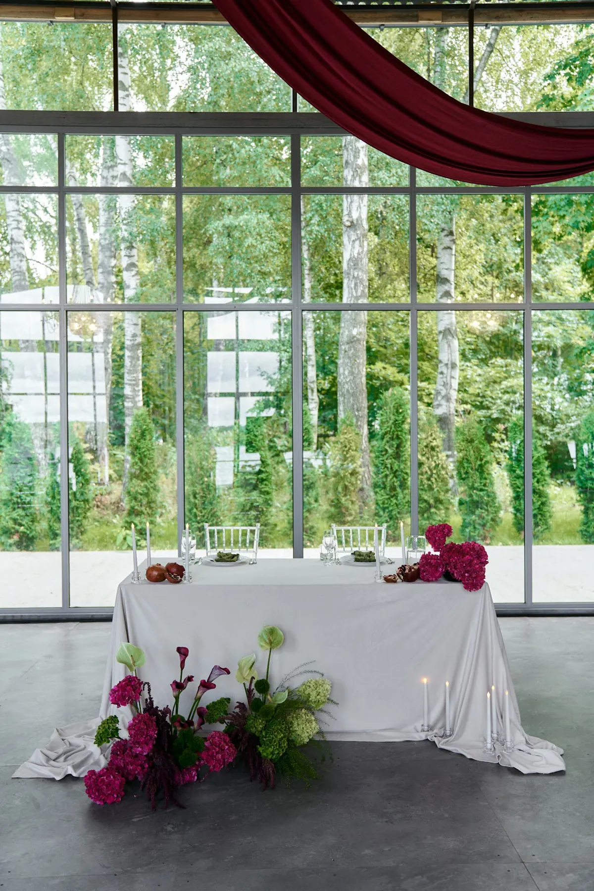
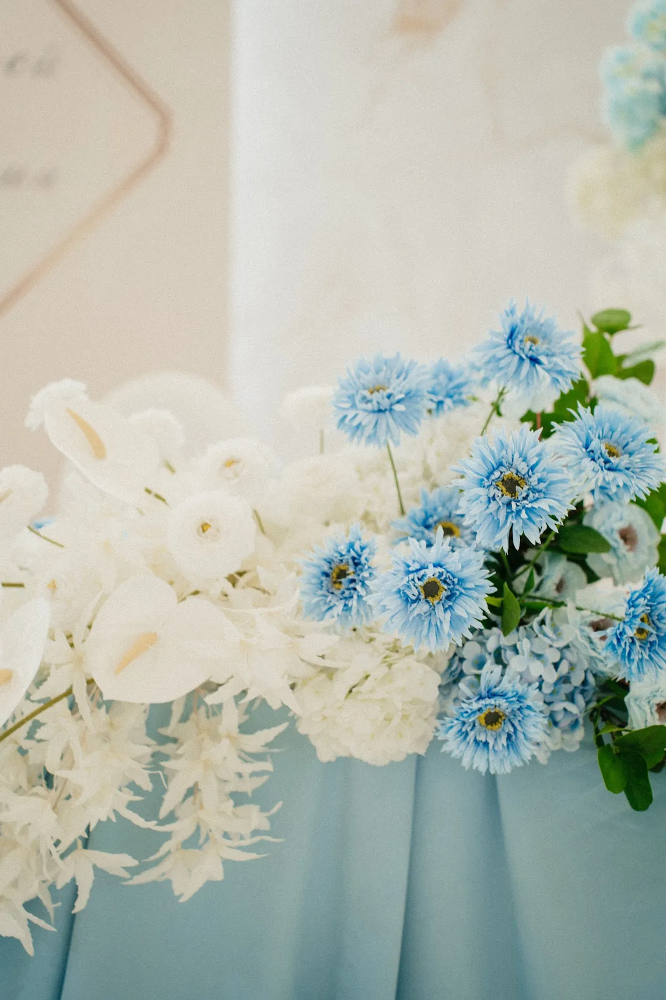
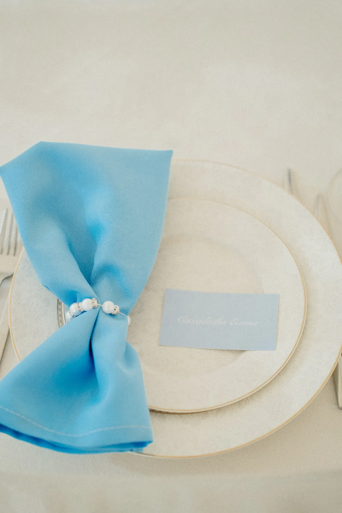
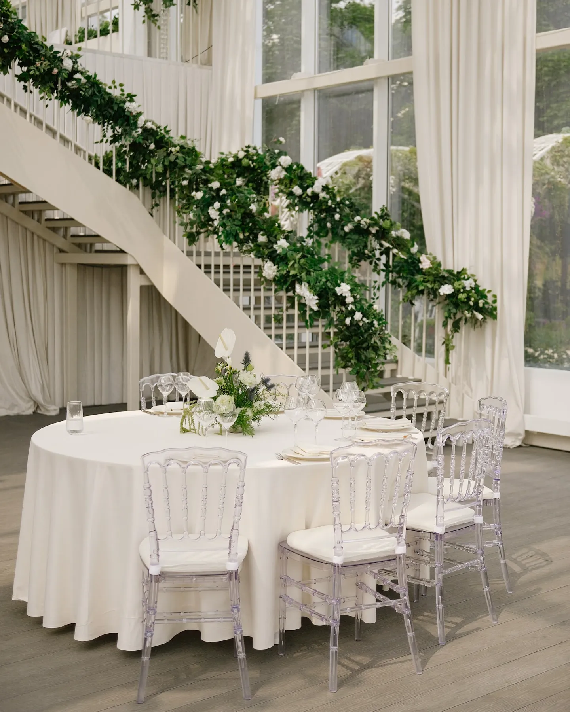
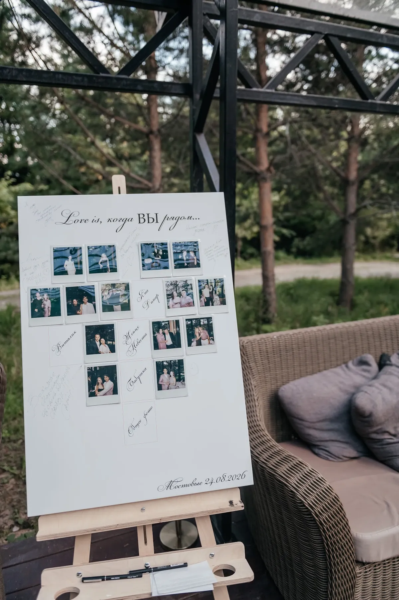

Оформление свадьбы — это не набор красивых предметов, а одна история, которую гости видят с момента входа до последнего танца. Рассказываем, с чего начать, какие зоны оформляют и как устроена работа с декоратором — на примерах свадеб, которые мы оформляли.
Начните с концепции, а не с цветов
Концепция — короткий ответ на вопрос «какая у нас свадьба»: белый сад под стеклом, шёлк и свечи, голубая летняя церемония, бордовый вечер у воды. Из неё следуют палитра, материалы и настроение — и уже потом конкретные цветы, ткани и посуда.
Чтобы сформулировать концепцию, соберите 10–15 картинок, которые вам нравятся, и посмотрите на площадку: её архитектура, свет и цвет стен подскажут, что будет смотреться органично.


Палитра: два-три основных цвета
Удобная схема — один базовый нейтральный цвет (белый, айвори, зелень) и один-два акцента. Акцент повторяют в нескольких местах: в цветах, в текстиле, в салфетках, в полиграфии. Так зал выглядит цельным, а не случайным.


Какие зоны оформляют
- Церемония — арка или фон, проход, стулья гостей.
- Президиум — стол пары, главная точка зала и половины фотографий.
- Гостевые столы — композиции, текстиль, свечи, номера столов.
- Фотозона и велком-зона — первое, что видят гости.
- Навигация — план рассадки, указатели, меню.
Не обязательно оформлять всё одинаково сильно: лучше сделать два-три ярких акцента, чем равномерно «украсить всё понемногу».


Как устроена работа с декоратором
- Знакомство: дата, площадка, количество гостей, ваши референсы.
- Идея и мудборд: палитра, ключевые зоны, примеры материалов.
- Смета по позициям — видно, на что уходит бюджет, и можно что-то убрать или усилить.
- Детализация: схема зала, размеры конструкций, согласование с площадкой.
- Монтаж в день свадьбы и демонтаж после.
Совет: начинайте обсуждать декор, как только выбрана площадка — так проще согласовать время монтажа и технические ограничения.
Как заказать
Мы оформляем свадьбы в Москве и Подмосковье — от камерных ужинов до больших банкетов. Посмотрите наши кейсы и расскажите о дате и площадке — предложим идею и посчитаем смету.
Частые вопросы
За сколько времени до свадьбы заказывать декор?
Чем раньше, тем лучше: популярные летние даты разбирают заранее. Обсуждать декор удобно сразу после выбора площадки.
Сколько стоит оформление свадьбы?
Зависит от площадки, количества гостей, объёма цветов и конструкций. Смету считаем по позициям после того, как понятны идея и площадка.
Можно ли оформить свадьбу только частично?
Да. Часто оформляют главные акценты — церемонию, президиум и фотозону, а гостевые столы делают проще.
Кто монтирует и убирает декор?
Команда декоратора: монтаж в день свадьбы в согласованное с площадкой время и демонтаж после окончания.